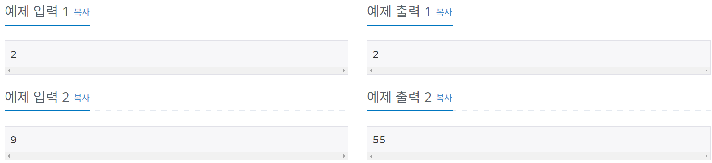
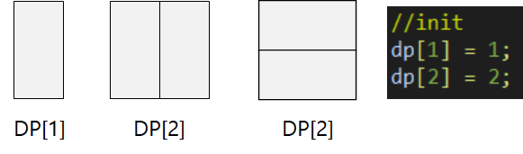
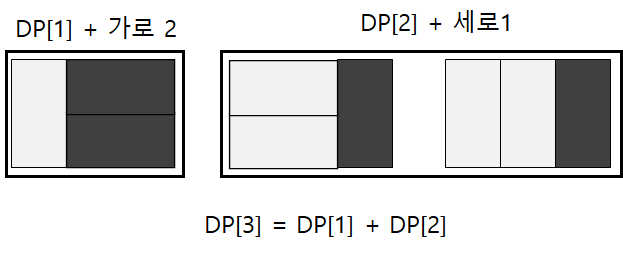
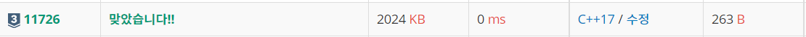

#INFO
난이도 : SIVER3
알고리즘 유형 : 다이나믹 프로그래밍 (DP)
∞ 출처 : https://www.acmicpc.net/problem/11726
11726번: 2×n 타일링
2×n 크기의 직사각형을 1×2, 2×1 타일로 채우는 방법의 수를 구하는 프로그램을 작성하시오. 아래 그림은 2×5 크기의 직사각형을 채운 한 가지 방법의 예이다.
www.acmicpc.net

#SOLVE
간단한 DP문제이다. DP[N] = 2XN 크기의 직사각형을 채우는 방법의 수라고 가정하고, DP[1] DP[2]를 각각 1 , 2로 초기화 시켜준다.

다음으로 DP[3]을 만드는 방법의 수를 생각해 보자.

DP[1] 에서 2X1 타일 2개를 추가하는 케이스와 DP[2] 에서 1X2 타일 1개를 추가하는 케이스로 분류가 가능하다.
즉 DP[3] = DP[1] + DP[2]가 된다.
따라서 이를 DP[N] = DP[N-2] + DP[N-1] 라는 점화식으로 표현이 가능하다.
#CODE
#include <iostream>
using namespace std;
int dp[1001];
int main()
{
int n;
cin >> n;
//init
dp[1] = 1;
dp[2] = 2;
//solve
for (int i = 3 ; i <= n ; i++)
{
dp[i] = dp[i-1] + dp[i-2];
dp[i] = dp[i] % 10007;
}
cout << dp[n] << "\n";
return 0;
}